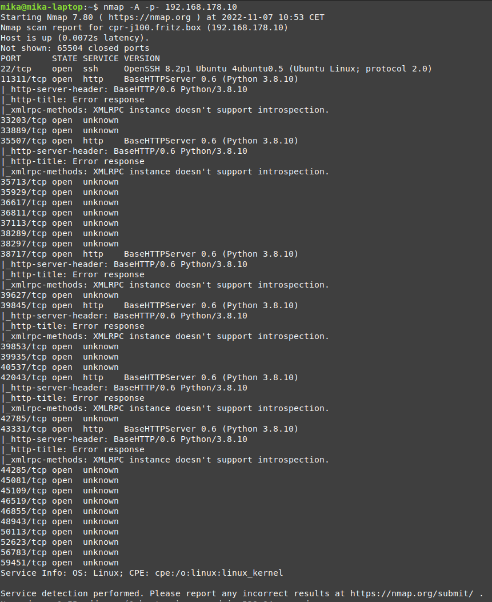

Tactic: Initial Access
Technique: Known Vulnerabilities
Autonomous robots often make use of third-party software. This software can run on publicly accessible ports, like the OpenSSH protocol. If these pieces of software contain known vulnerabilities, an attacker could enumerate its version and CVE, and potentially exploit the software to gain initial access into the machine.
Technique in practice
Video: How to exploit a CVE
Video: ZeroLogon exploit
Mitigations
Third-party software running on the autonomous robot that is running on a publicly accessible port should be kept up-to-date.
Detections
Automated software should periodically scan the software versions being used on the operating system. These versions can be cross-referenced with reputable CVE databases to check for vulnerabilities. Once such a vulnerability is detected, the owner of the robot should be notified.
Ethical Considerations
Although this technique is about publicly known vulnerabilities, one should consider what to do when a vulnerability is found that is not already disclosed. When a new vulnerability is found, one should consider what to do with this knowledge. Keeping the vulnerability to oneself and using it for your own goals, might be unethically. One should consider disclosing the vulnerability to the manufacturer or submitting it as a CVE. Depending on the situation, making the vulnerability public immediately is not desirable. In that case, one should at least consider it's disclosure after a certain period.
Documented incidents with autonomous robots
The Clearpath Jackal robot has been tested for vulnerabilities. After scanning the publicly accessible ports, the scanner detected that the host was running OpenSSH 8.2p1. Cross-referencing this version of OpenSSH with CVE databases uncovers that this version contains
a vulnerability that could potentially be exploited.

Documented incidents in other domains
[2022] State-sponsored attackers actively exploiting RCE in Citrix devices
[2022] Critical Windows code-execution vulnerability went undetected until now